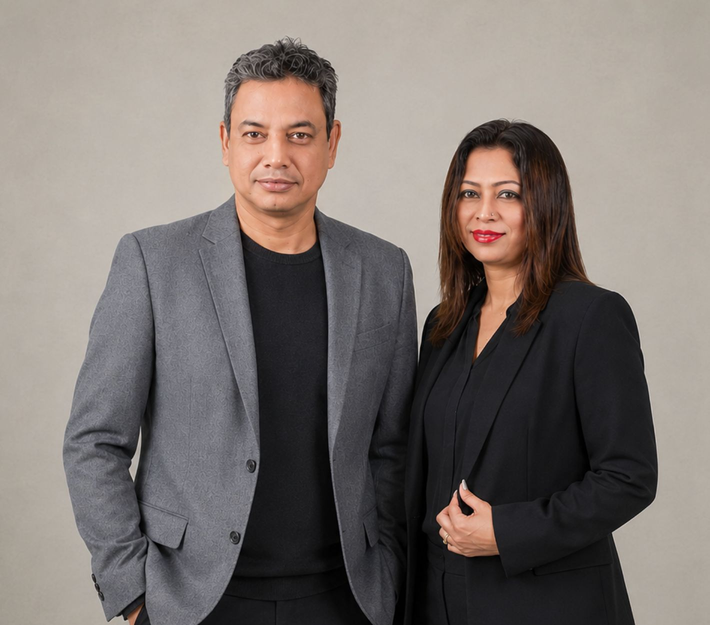

From our origins with early knitting lines in Dhaka to a multi-continent manufacturing alliance connecting Barcelona, Prato, Tokyo, and modern automated production facilities.
Manufacturing knitwear was never meant to be a transactional commodity. It is a shared technical discipline — balancing the tactile beauty of yarn with exacting engineering and unbending commitments to our people.

How two decades of disciplined growth shaped our present international operations.
Fashion Comfort is founded in Dhaka, Bangladesh, establishing direct manufacturing operations focused on high-quality knitwear for European export markets.
Secured first long-term development contracts with major Spanish retail groups including Inditex (Zara, Pull&Bear) and Mango, establishing our standard for rapid turnaround.
Major capital investment introducing German Stoll computerized flat-knitting technology, scaling multi-gauge capabilities from 3GG heavy knits to 12GG fine garments.
Fashion Comfort Europe S.L. opens its creative and commercial design studio in Vilassar de Mar, Barcelona, providing immediate proximity to European creative directors.
Consolidation into our unified 553-machine manufacturing complex, ASDWA Fashion Ltd., housing knitting, linking, washing, lab testing, and social facilities under one roof.
Awarded international environmental certifications: GOTS (Organic Textile), GRS (Global Recycled), RWS (Responsible Wool), and OEKO-TEX Standard 100.
Inaugurated LYK (Lubaba Yarn Kitchen), a pioneering circular initiative transforming post-industrial cutting scraps into premium regenerated yarns with zero water dyeing.
Expanded presence into Prato, Tokyo, and Shanghai with connected 3D digital sampling and ongoing LEED Platinum sustainable facility transformation.
We build relationships measured in decades, not seasons. Over 80% of our production volume comes from partners who have worked with us for over 10 consecutive years.
We invest relentlessly in modern German and Japanese computerized machinery, automated yarn tension controls, and strict laboratory testing protocols.
From worker healthcare and daycares to solar energy and regenerated yarns, our operational integrity protects our clients' reputations and our communities.
Experience the difference of a true manufacturing partner with direct factory control and creative European design support.
Initiate an Inquiry →